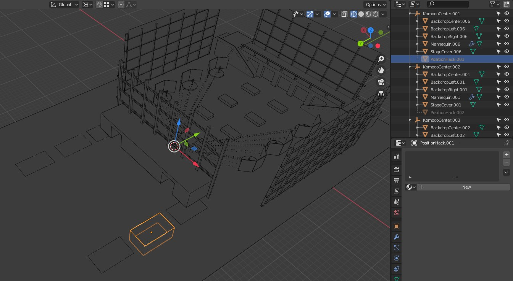

Recent Works
Project Komodo WebXR VR Modules

November 2019 - March 2022.
About the Main Project
For the IDEA Lab Developer Studio at Grainger Engineering Library, I helped create and maintain an open-source, multiplayer, WebXR VR platform designed for education.

Project Komodo + Fashion Illustration Module
Tilt Brush-based Module WebXR Client that runs on the Komodo Web Platform
Dates: January 2020 – March 2022.
Client: Professor Chiara Vincenzi
Collaborators: Project Komodo Platform team, CITL at Illinois (Megan Baird, Jamie Nelson, Jim Wentworth)
Role: Software Consultant, 3D Modeler, Environment Artist
Languages: Unity, C#, Blender
Libraries: googlevr/tilt-brush-toolkit


Project Komodo + Microscale Materials Science Module
Teaching module that runs on the Komodo Core WebXR Client with the Web Platform
Dates: January 2020 – Ongoing.
Client: Dr. Andre Schleife.
Collaborators: Project Komodo Platform team
Tools
- Blender
- C#
- Unity
Major Accomplishments
- 3D Modeling
- Software Consulting
Confidential. Please email me for more details.
Project Komodo x Impress Science Drawing Module
Research Module WebXR Client that runs on the Komodo Web Platform
IDEA Lab Technical Support
Assisted thirty students with VR and Komodo usage. Set up and post-processed first- and third-person VR headset recordings. Familiar with Quest, Rift (S), WebXR-supporting browsers, such as Oculus Browser, Firefox Reality (Quest), Firefox Reality (PC VR).